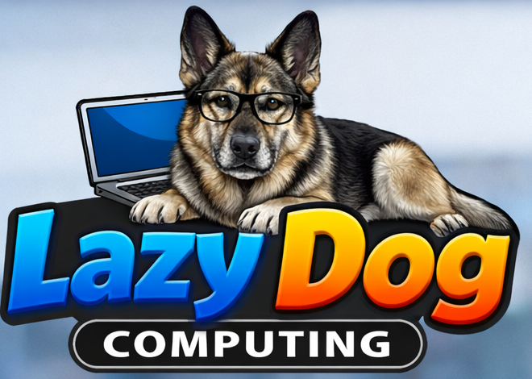

Lazy Dog Computing helps local businesses modernize Microsoft 365, secure users and devices, protect critical data, and reduce the disruption caused by everyday technology problems.

We help law firms, medical practices, financial organizations, manufacturers, and other small to midsize businesses improve reliability, security, and control without turning every technology decision into a complicated project.
Tenant cleanup, Entra ID, Intune, Defender, SharePoint, OneDrive, Teams, and migrations from older platforms.
Identity protection, endpoint security, vulnerability visibility, patching, user awareness, and framework-aligned improvements.
Veeam-centered backup planning, restore testing, ransomware resilience, and realistic business continuity preparation.
Our service model is designed for businesses that depend on email, files, business applications, remote access, and reliable devices every day. We focus on reducing surprises and explaining technology in terms people can use.
Managed IT, Microsoft 365, security, and backup support for local organizations.
Practical support for offices, professional firms, and growing businesses.
Modernization, cybersecurity, and recovery planning for local companies.
Reliable technology support for professional and industrial environments.
Tell us what is working, what is frustrating your team, and what you are concerned about. We will help you identify a sensible next step.
Request Information